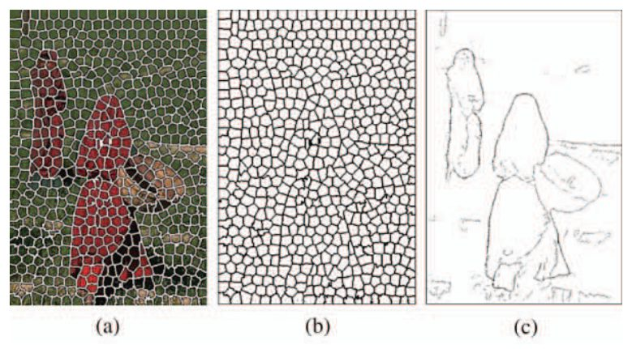
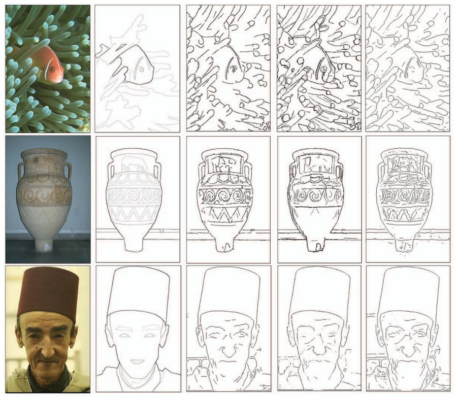
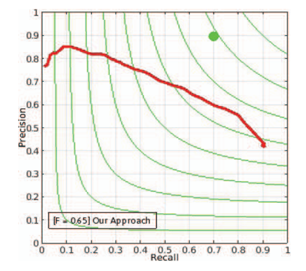

Finding object outlines in photos by combining seven cues and superpixels
A contour is the line where one object ends and another begins. Finding it is a basic step in computer vision, and it is harder than it sounds, because shadows, texture and noise also create sharp changes in a picture. We built a detector that looks at an image through seven different channels. It then uses superpixels, small patches of similar pixels, to remove the edges that are not real object boundaries.
The problem
Classical edge detectors look for places where brightness changes quickly. They are fooled by shadows, reflections and noise, which also create sharp changes, so they produce false edges. They also break real contours into pieces where the boundary is faint. Some methods that link edges together ignore the picture as a whole, and others take a long time.
Seven views of one image
We turn each image into seven channels. Three come from the CIELAB colour space, which describes brightness and two colour axes in a way that is closer to human perception than plain RGB. The fourth is hue, the pure colour, taken from the HSV colour space. Two objects of similar brightness but different colour then differ in at least one channel. The last three come from an "intrinsic image", which measures how much each pair of red, green and blue values differs, compared with the total difference across all pairs.

In each channel we measure "busyness", an idea from Dondes and Rosenfeld in 1980: the average difference between pairs of neighbouring pixels in a small window. Around each pixel we compare busyness histograms on the two sides of a circle, over eight orientations and three image sizes, and take the strongest response. The seven channel results are added up with weights we learned from the training images, by repeatedly nudging the weights to raise the F-measure. That is a score that balances finding true edges against reporting false ones.
Superpixels as a filter
Next we cut the image into superpixels with SLICO, a version of the SLIC method that needs no tuning of patch compactness. Superpixel borders tend to follow real object borders. We keep only those edges that lie close to a superpixel border.
The number of superpixels has to be chosen in advance, so we learned it from the training images. We grouped the 200 training images by scene type, using k-means clustering on spatial-pyramid and colour-histogram features. A statistical method, the gap statistic, found 11 groups. For each training image we found the best superpixel count by gradient ascent on a weighted F-measure that favours recall, then averaged the counts within each group. A new image gets the count of the group whose centre is nearest.

What we found
We tested on the Berkeley Segmentation Dataset (BSDS300), where people drew the boundaries they see in each photo. Our average precision was 0.65, second of nine methods, behind only gPb at 0.68 (Table I). The remaining methods in the table scored between 0.62 and 0.43 (Table I). The paper reports that ours runs much faster than gPb, which it describes as suffering from inordinate time complexity.

Results in more detail
Table I lists all nine methods we compared. The first column of numbers is average precision (AP) over the whole recall range, the second is speed in frames per second, and the third is the maximum recall each method reaches, meaning the largest share of the human-marked boundary pixels it finds. The paper prints speed as a fraction for the slower methods: 1/47 for ours and 1/240 for gPb.
| Method | Average precision (AP) | Speed (FPS) | Maximum recall |
|---|---|---|---|
| gPb | 0.68 | 1/240 | 0.92 |
| Our approach | 0.65 | 1/47 | 0.91 |
| EDContours | 0.62 | 1/2 | 0.87 |
| Setayesh et al. | 0.61 | 1/32 | 0.85 |
| Canny | 0.58 | 15 | 0.96 |
| Mean Shift | 0.54 | - | 0.82 |
| Felz-Hutt | 0.53 | 10 | 0.99 |
| Sobel | 0.49 | 32 | 0.97 |
| Normalized Cuts | 0.43 | - | 0.91 |
Our maximum recall is 0.91, next to gPb's 0.92. Felz-Hutt (0.99), Sobel (0.97) and Canny (0.96) reach higher recall but have lower average precision (Table I). The table also lists classic detectors that run faster than ours, such as Canny at 15 and Sobel at 32, which score 0.58 and 0.49 in average precision (Table I). The paper makes its speed comparison with gPb, which it says suffers from inordinate time complexity.
The detector was tuned on the 200 BSDS300 training images. Grouping them by scene type gave 11 groups. When we searched for the best superpixel count of each training image, we gave recall extra weight, setting the weighting parameter to 3, so that salient edges are not lost. The search covered counts from 1 up to about 6176, in steps of 20. That upper limit assumes that the smallest object in a 481 by 321 image covers at least 25 pixels.
Performance is scored with precision, the share of detected edge pixels that are true, and recall, the share of the ground-truth edge pixels that are found. The F-measure, their harmonic mean, is our evaluation metric. All the boundaries the human annotators marked count as valid, and the average precision is taken over the entire recall range. Figure 4 of the paper plots the precision-recall curve of our detector.

Discussion
The conclusion of the paper is that our approach captures object boundaries efficiently and keeps spurious edges to a minimum, while achieving state-of-the-art accuracy. We describe the results as preliminary. They put the detector second of nine in average precision, behind gPb (Table I), and they are adequate, we say, to underscore the significance of using several cues at once.
The paper gives three reasons for the design. Colour channels, including hue, separate neighbouring objects that have similar brightness but different colours. Earlier multi-channel methods average the channels with equal weight, which ignores that some cues matter more than others, so we learn the weights by gradient ascent on the F-measure. And superpixels bring in scene-level context. Their borders tend to follow real object borders, we choose their number by scene type, and edges far from those borders are dropped as outliers.
We did not use texture. As future work we plan to add a texture channel to carry texture-level information, followed by region information based on the correlation between the colour channels, to capture more semantic information.
In the paper's conclusion, combining several cues with scene-level superpixel context captures object boundaries while keeping spurious edges down.
Sources
The figures and tables listed here are taken from the paper cited at the top of this page; the numbers quoted in the text come from it too.
- Figures: Fig. 1, Fig. 2, Fig. 3, Fig. 4
- Tables: Table I: average precision, speed and maximum recall of nine contour detection methods on BSDS300
Cite the paper
S Choudhuri, N Das, Swarnendu Ghosh, M Nasipuri (2016). A multi-cue information based approach to contour detection by utilizing superpixel segmentation. International Conference on Advances in Computing, Communications and Informatics (ICACCI), pp. 1057–1063 · IEEE.
@inproceedings{choudhuri2016multi,
author = {Choudhuri, S and Das, N and Ghosh, Swarnendu and Nasipuri, M},
title = {A multi-cue information based approach to contour detection by utilizing superpixel segmentation},
booktitle = {International Conference on Advances in Computing, Communications and Informatics (ICACCI)},
pages = {1057--1063},
publisher = {IEEE},
year = {2016},
doi = {10.1109/icacci.2016.7732184}
}